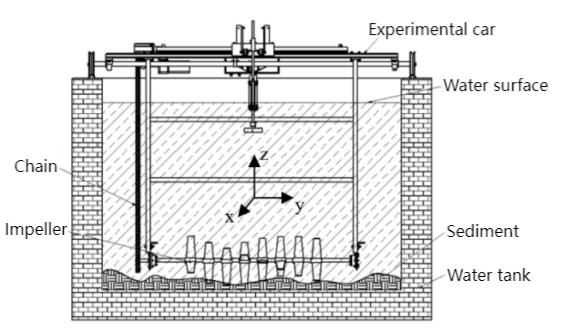
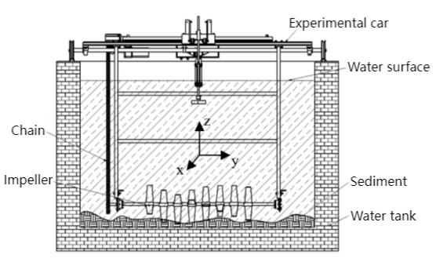

Personal Information
- University: Central South University
- College: College of Mechanical and Electric Engineering
- Major: Intelligent Manufacturing
- Degree: Bachelor of Engineering
- Expected Graduation: June 2026
- Average Score: 89.58/100
- Rank: 4th out of 24 students
- Enrolled Since: September 2022 (Bachelor Degree)
Education Background
Central South University
Bachelor of Engineering in Intelligent Manufacturing
September 2022 – June 2026 (Expected)
Research Focus
My research interests lie in autonomous driving systems, integrating computer vision, machine learning, and deep learning. I am actively studying advanced machine learning techniques and eager to apply them to complex systems.
I have experience in optimizing imaging techniques and developing agricultural automation solutions. As a Research Assistant at the Deep-Sea Resource Exploration and Development Laboratory, I worked on restoring turbid underwater images of cobalt crusts using homomorphic filtering and polarization imaging.
Research Project Achievements:
Abstract: Marine cobalt-rich crusts, extensively used in industries such as aerospace, automotive, and electronics, are crucial mineral resources located on the ocean floor. To effectively exploit these valuable resources, underwater imaging is essential for real-time detection and distribution mapping in mining areas. However, the presence of suspended particles in the seabed mining environment severely degrades image quality due to light scattering and absorption...
 

Honors and Awards
- 2022-2023 Academic Year Scholarship - Central South University
- 15th China University Physics Academic Competition for Central South University - First Prize
- 11th Central South University Students Mechanical Innovation Design Competition - Second Prize
- Outstanding Student - Central South University (2023, 2024)
- 2023-2024 Academic Year Scholarship - Central South University
- Outstanding Individual in Mass Sports Activities - Central South University (2024)
- University Sports and Culture Festival - Second Prize
- 19th Mathematical Modeling Competition - Second Prize